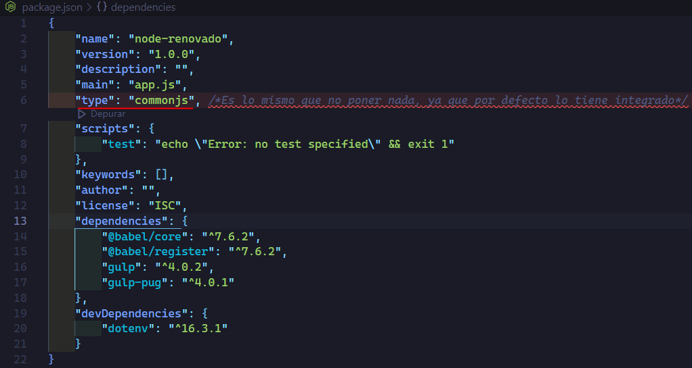
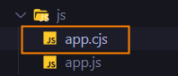
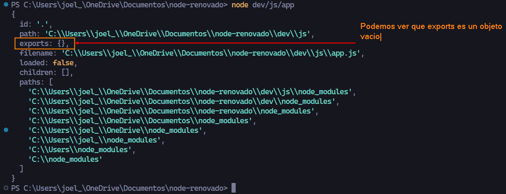
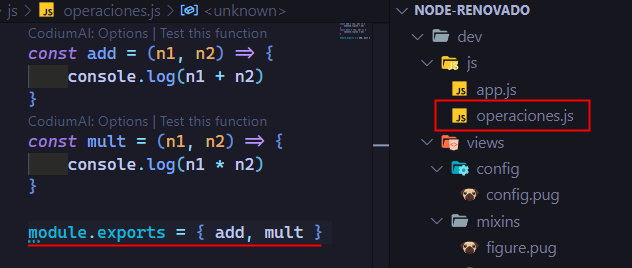
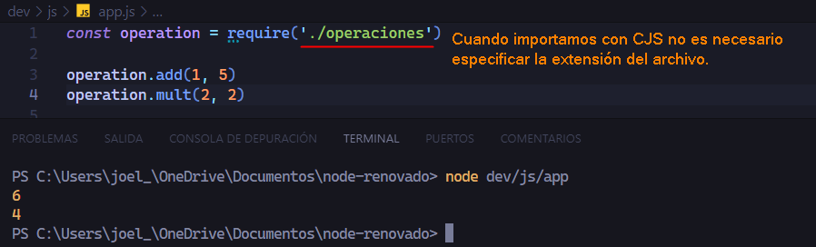
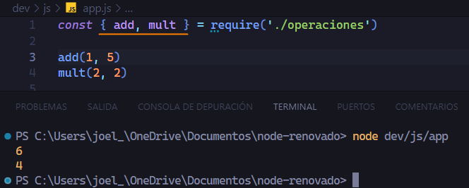
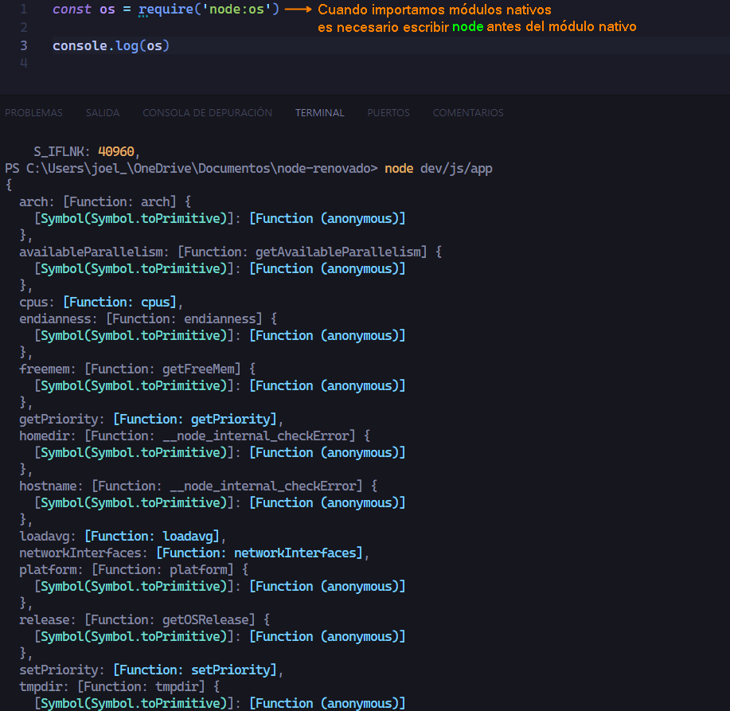
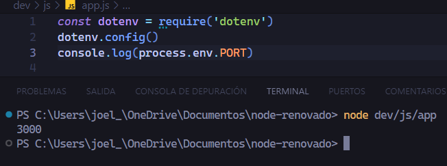
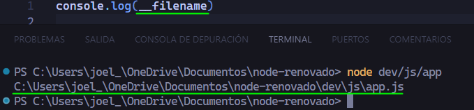
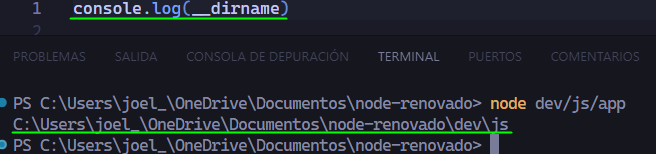

En Node.js, un módulo es básicamente un archivo JavaScript que encapsula cierta funcionalidad y puede ser reutilizado en otras partes de una aplicación. El sistema de módulos en Node.js permite organizar el código en archivos separados, lo que facilita el mantenimiento y la modularidad del código.
Existen dos tipos principales de módulos en Node.js:
Módulos integrados (Core Modules) o Módulos Nativos
Módulos integrados (Core Modules): Estos son módulos que están incluidos en la instalación de Node.js y se pueden utilizar directamente sin necesidad de instalar nada adicional. Algunos ejemplos son el módulo fs para operaciones de sistema de archivos, el módulo http para crear servidores web, y muchos otros.
Aquí una lista de Core Modules:
fs (File System): Proporciona funciones para interactuar con el sistema de archivos, como leer y escribir archivos.
http: Permite la creación de servidores web y la realización de solicitudes HTTP.
path: Proporciona utilidades para trabajar con rutas de archivos y directorios.
events: Proporciona una implementación simple de patrón de eventos que permite la emisión y escucha de eventos.
util: Proporciona funciones de utilidad para facilitar el desarrollo, como util.promisify para convertir funciones basadas en devoluciones de llamada en promesas.
os (Operating System): Proporciona información sobre el sistema operativo, como la arquitectura y la carga de la CPU.
querystring: Ofrece utilidades para trabajar con cadenas de consulta en URLs.
crypto: Proporciona funciones criptográficas, como la creación de hash y la generación de números aleatorios.
url: Facilita el análisis y la formación de componentes de URL.
zlib: Proporciona funciones para comprimir y descomprimir datos utilizando el formato zlib.
Módulos externos
Estos son módulos creados por la comunidad de desarrolladores y se pueden instalar utilizando el sistema de gestión de paquetes de Node.js, que es npm (Node Package Manager). Los módulos externos permiten extender la funcionalidad de Node.js con bibliotecas y herramientas adicionales.
Aquí una lista de Modules externos:
dotenv: Carga variables de entorno desde un archivo .env en el proceso de Node.js.
express: Framework web minimalista para construir aplicaciones web y APIs.
axios: Cliente HTTP basado en promesas para realizar solicitudes HTTP.
mongoose: ODM (Object Data Modeling) para MongoDB, facilita la interacción con bases de datos MongoDB.
jsonwebtoken: Implementa la generación y verificación de JSON Web Tokens (JWT).
body-parser: Middleware para analizar el cuerpo de las solicitudes HTTP en Express.
lodash: Biblioteca de utilidades que facilita la manipulación y manipulación de datos.
socket.io: Biblioteca para la comunicación en tiempo real mediante WebSockets.
request-promise: Versión basada en promesas del módulo request para realizar solicitudes HTTP.
nodemailer: Biblioteca para enviar correos electrónicos desde aplicaciones Node.js.
Cuando creamos nuestros propios archivos JavaScript en Node.js, cada archivo se trata como un módulo independiente. Podemos exportar funciones, variables u objetos desde un módulo y luego importarlos en otro utilizando la palabra clave require en caso de CJS.
¿Qué es CJS?
Módulos comunes (CommonJS): Es un sistema de módulos que fue popularizado por Node.js. En CommonJS, los módulos se cargan de forma sincrónica, y la estructura del módulo incluye module.exports para exportar valores como objetos, funciones y variables desde un módulo y luego importarlos y utilizarlos en otros módulos utilizando la función require().
CJS es nativo de Node.js por lo que no se requiere instalar nada ya que vienen incluido en node.js.
Si en nuestra aplicacion Node.js utilizaremos CJS como sistema de módulos no es necesario especificar el tipo de módulo en el package-json, ya que por defecto Node.js trabaja con CJS, cualquier archivo.js por defecto trabaja con CJS.
Veamos nuestro packaje-json.

Si en nuestro proyecto estamos utilizando otro sistema de módulos como ESM que es el más recomendado actualmente y necesitamos utilizar CJS podemos crear un archivo con la extención .cjs y de esta manera podremos utilizar CJS cuando nuestro sistema de modulos es ESM, aunque hay otras técnicas como crear nuestra propia función require.

Nosotros en esta sección trabajaremos con el sistema de módulos por defecto CJS
Hasta este punto ya sabemos que para exportar valores utilizamos module.exports = {funcion,variable,clase,etc} y para importar ocupamos la función require().
Si en la consola imprimimos module podemos ver lo que contiene, hay que saber que module solo existe en el sistema de módulos CJS.

Exportación e Importación de módulos locales
Crearemos un archivo llamado operaciones donde tendremos funciónes que hacen una operación aritmetica y exportaremos esas funciones para poder reutilizarlas en otra parte de nuestra aplicación.

Cuando importamos con CJS no es necesario poner la extención del archivo.

Tambien podemos utilizar destructuración

Importación de módulos nativos
Como se explicó al inicio de la sección existen módulos nativos, veremos como importarlos.
Lo primero es que cuando importamos módulos nativos como externos de Node.js, no es necesario especificar una ruta, basta con poner el nombre del módulo. Esto es posible porque require sigue un algoritmo donde puede detectar si ese módulo pertenece tanto a un módulo nativo de node y si no lo encuentra pasa a buscar a node_modules.
Lo segundo es que a partir de Node 16 tanto en CJS como ESM cuando importamos módulos nativos debemos poner antes del nombre del módulo la palabra node:.

Importación de módulos externos
Como vimos al inicio de la sección cuando trabajamos con Node.js tenemos acceso a una paqueteria de módulos NPM(Node Package Manager) desarrollados por la comunidad.
Para poder importar estos módulos primero es necesario haberlos instalados en nuestro proyecto, ya sea como dependencia de desarrollo o de producción que lo veremos más adelante en otra sección.
Una vez instalado el módulo ya podemos importarlo.
Para importar no es necesario especificar la ruta, basta con solo poner el nombre del módulo externo.
En la sección anterior ya habiamos instalado un módulo externo llamado dotenv que nos sirve para leer variables de entorno desde un fichero .env, entonces importaremos ese módulo.

Variables globales en CJS
Cuando trabajamos con el sistema de módulos CJS, node nos brinda un par de variables globales que nos devuelve una cadena de texto sobre la ruta absoluta de nuestro módulo.
filename: Devuelve la ruta absoluta del módulo es decir nuestro archivo, hasta llegar al archivo.

dirname: Devuelve la ruta absoluta del módulo pero solo hasta la carpeta del módulo.

Lectura de JSON
Cuando trabajamos con CJS es posible leer archivos JSON en nuestra aplicación de forma nativa, ya que en el sistema de módulos ESM no es posible importar un JSON en nuestro código y tenemos que recurrrir a tecnicas como crear nuestra propia función require o cambiar la extensión del archivo a mjs para poder importar el JSON.
Veamos a continuación que es posible importar un JSON de forma nativa y facíl con CJS.